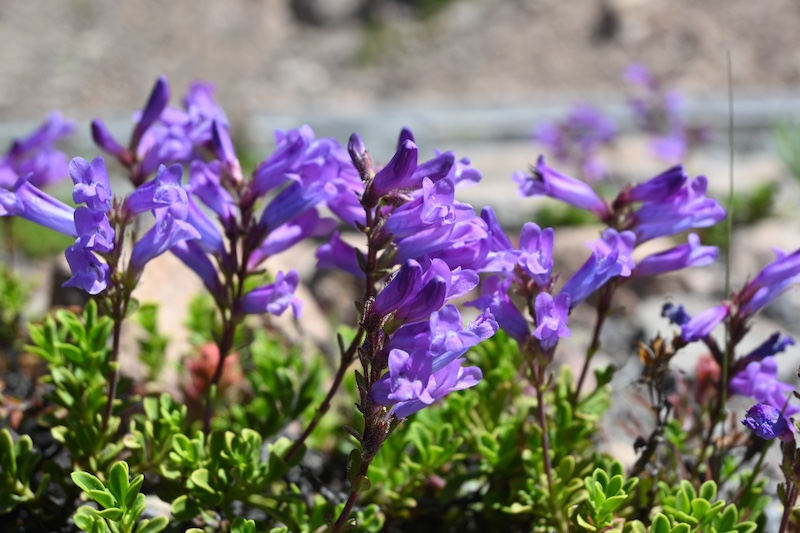
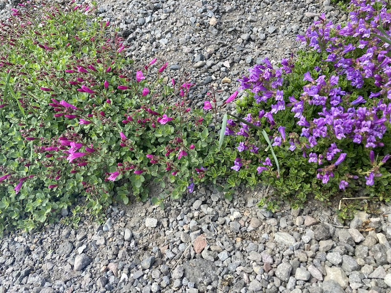
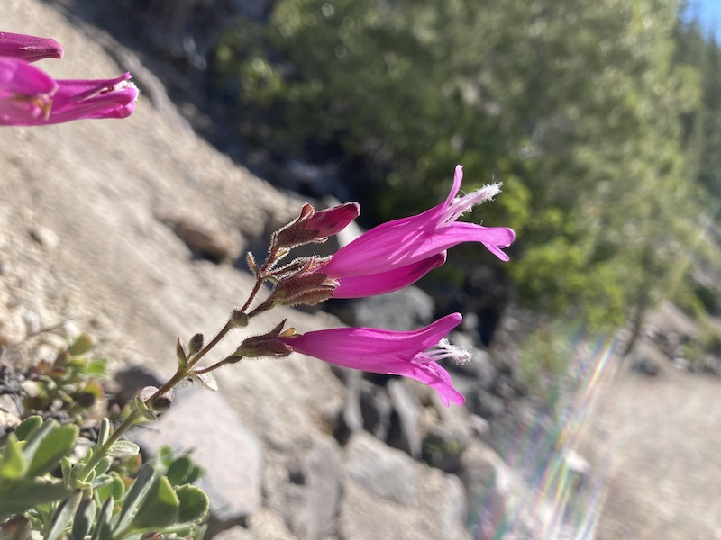
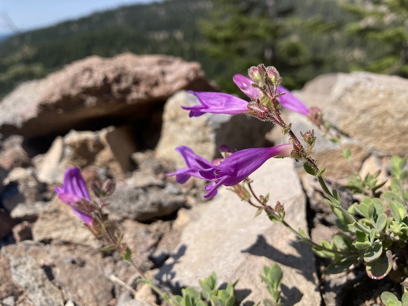
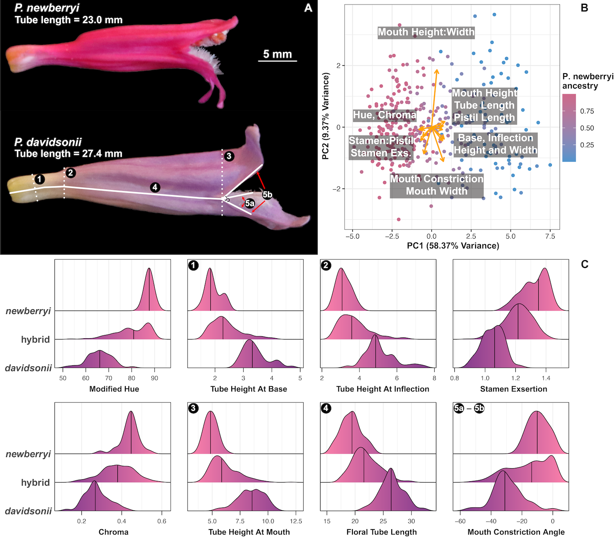
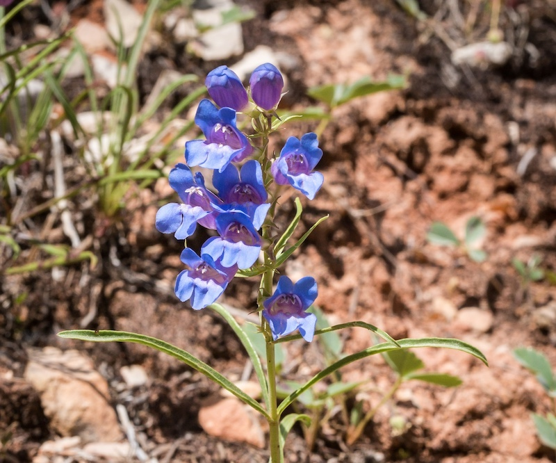
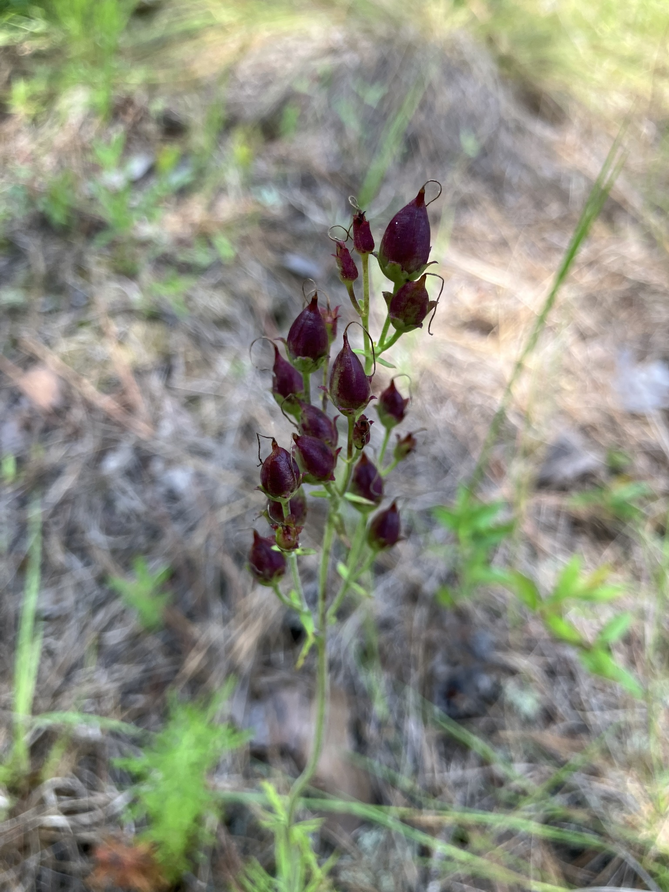
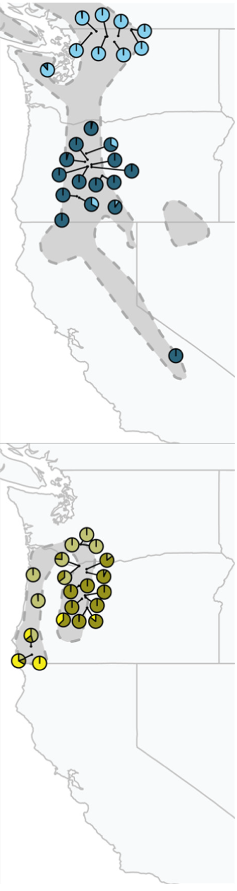

We use genomic, phenotypic, and ecological data to understand adaptation, speciation, and convergent evolution, mainly in the emerging model plant genus Penstemon.
We are broadly interested in how species persist as recognizable units upon secondary contact in the wild. To answer this question we make use of long-standing hybrid zones as "natural laboratories", especially when they form between species with divergent floral characteristics and/or across environmental gradients.
We plan to continue studying hybrid zones, speciation, and the evolution of reproductive isolation in Penstemon to answer specific questions, like:




Hummingbird pollination has evolved in Penstemon more than twenty independent times. Beyond the propensity to transition to hummingbird pollination, the remarkable diversity of floral shape, size, and color across the genus has led many to speculate that adaptation to different suites floral visitors has contributed to its diversification. We are interested in:
More broadly, we are interested in the evolution of floral traits across Penstemon and other plant groups and in using pollination biology as a lens through which to better understand speciation and the repeatability of adaptation.

Penstemon is broadly distributed across the North American continent and has considerable variation in the geographic extent of species' ranges; some species are common and widespread, while others are narrowly endemic and exceedingly rare. This combination of traits makes the genus an excellent system for both studies of population structure over geographic space and studies with an applied conservation focus. We use phylogeographic and population genomic approaches for:


